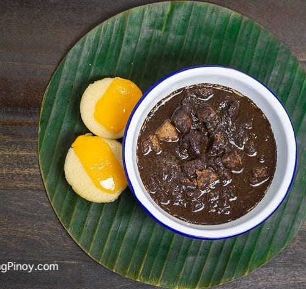

How to Make Dinuguan (chocolate meat)

Description
Dinuguan also known as "chocolate stew" or "chocolate meat" and
Tidtad in the province of Pampanga is a popular Filipino dish that
consists of pork sauteed in onion and garlic and cooked in pork blood.
Ingedients
- 1 pound of pork, cut into cubes
- 1 cup of vinegar
- 2 pieces of long green pepper
- 1 ½ tablespoon of brown sugar
- 1 piece of onion, chopped finely
- 1 tablespoon of garlic, minced
- 3 tablespoon of cooking oil
- 1 cup of water
- 10 ounces of pork blood
- 1 piece of pork cube bouillon
- salt and pepper to taste
Cooking Steps
- Heat oil in pan and sautee garlic and onion
- Once onion softens, add pork
- Sautee for another 5 min or until light brown
- Pour water and let boil
- Add pork cube and cook in low heat until meat tenderizes
- Add pork blood and stir; cook for 8-10 min while stirring
- Pour vinegar and add sugar and long green pepper
- Season with salt and pepper as needed
- Serve with puto and/or rice